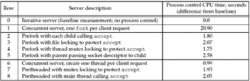
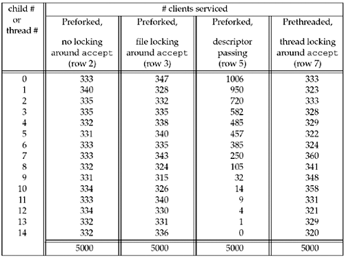

| [ Team LiB ] |
|
30.1 IntroductionWe have several choices for the type of process control to use when writing a Unix server:
There are two other modifications to the concurrent server design that we will look at in this chapter:
There are numerous details with preforking and prethreading that we will examine in this chapter: What if there are not enough processes or threads in the pool? What if there are too many processes or threads in the pool? How can the parent and its children or threads synchronize with each other? Clients are typically easier to write than servers because there is less process control in a client. Nevertheless, we have already examined various ways to write our simple echo client and we summarize these in Section 30.2. In this chapter, we will look at nine different server designs and we will run each server against the same client. Our client/server scenario is typical of the Web: The client sends a small request to the server and the server responds with data back to the client. Some of the servers we have already discussed in detail (e.g., the concurrent server with one fork per client), while the preforked and prethreaded servers are new and therefore discussed in detail in this chapter. We will run multiple instances of a client against each server, measuring the CPU time required to service a fixed number of client requests. Instead of scattering all our CPU timings throughout the chapter, we summarize them in Figure 30.1 and refer to this figure throughout the chapter. We note that the times in this figure measure the CPU time required only for process control and the iterative server is our baseline we subtract from actual CPU time because an iterative server has no process control overhead. We include the baseline time of 0.0 in this figure to reiterate this point. We use the term process control CPU time in this chapter to denote this difference from the baseline for a given system. Figure 30.1. Timing comparisons of the various servers discussed in this chapter. All these server timings were obtained by running the client shown in Figure 30.3 on two different hosts on the same subnet as the server. For all tests, both clients spawned five children to create five simultaneous connections to the server, for a maximum of 10 simultaneous connections at the server at any time. Each client requested 4,000 bytes from the server across the connection. For those tests involving a preforked or a prethreaded server, the server created 15 children or 15 threads when it started. Some server designs involve creating a pool of child processes or a pool of threads. An item to consider in these cases is the distribution of the client requests to the available pool. Figure 30.2 summarizes these distributions and we will discuss each column in the appropriate section. Figure 30.2. Number of clients or threads serviced by each of the 15 children or threads. |
| [ Team LiB ] |
|